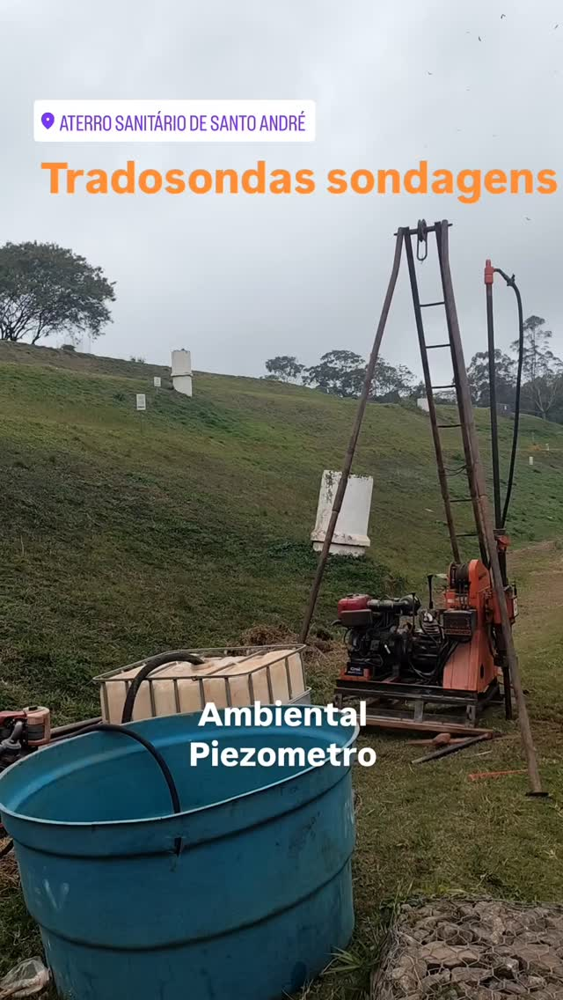
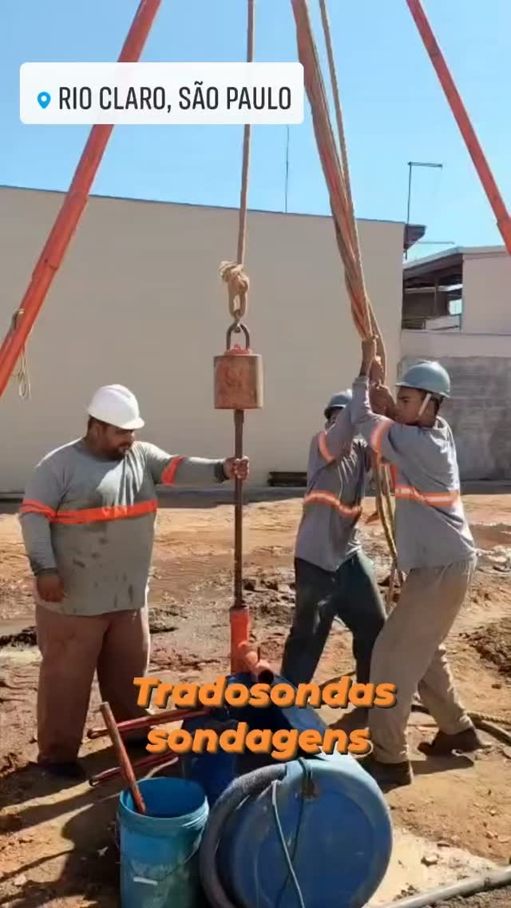
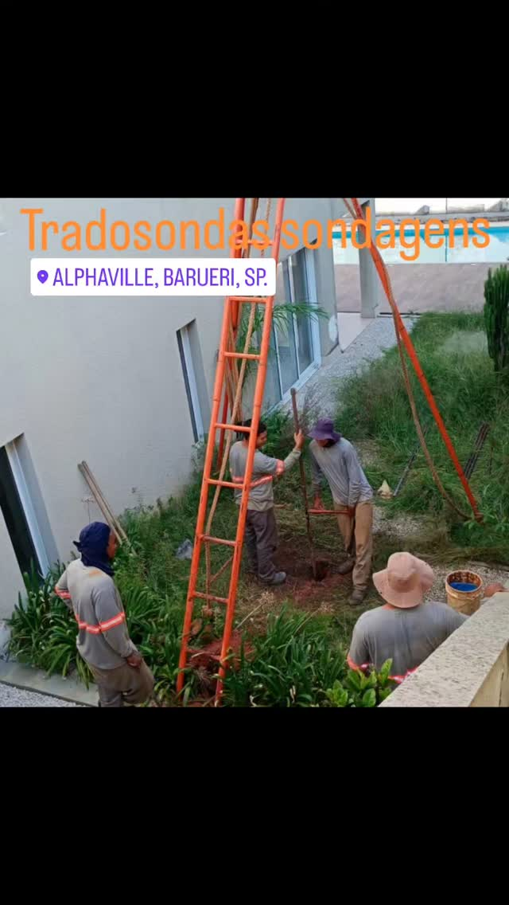
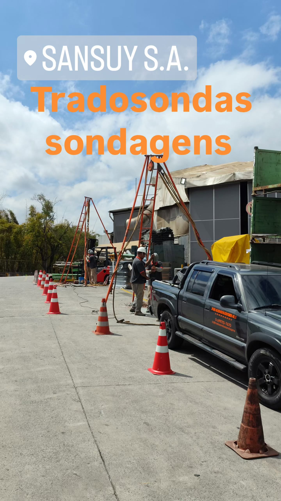

Sondagem e Monitoramento na Grande São Paulo e ABC
Logística especializada em áreas urbanas e confinadas para Sondagem SPT, Rotativa e a Trado. Atendemos São Paulo Capital, Santo André, São Bernardo, Barueri e todo o ABC Paulista. Nossos serviços incluem a instalação de Poços de Monitoramento (Piezômetros) para conformidade CETESB.
Orçamento para SP / ABCCasos de Sucesso em Logística Urbana e Industrial
Nossa experiência abrange desde obras em terrenos pequenos na capital até grandes projetos industriais e de monitoramento ambiental no ABC.

Monitoramento em Santo André (ABC)
Instalação de piezômetro em aterro sanitário/área industrial, essencial para controle ambiental.

Sondagem em Cubatão (Baixada Santista)
Investigação geotécnica para projeto residencial ou industrial na região portuária.

Sondagem em Rio Claro, SP
Serviço de SPT em projeto fora do eixo metropolitano, destacando nossa capacidade logística.

Sondagem em Alphaville, Barueri
Investigação geotécnica para construção de grandes projetos residenciais e comerciais.

Sondagem Industrial (ABC)
Investigação geotécnica para expansão de planta industrial com exigências de laudos rigorosos.
*Não encontrou sua cidade? Nossa logística otimizada cobre todo o cinturão metropolitano de São Paulo e o ABC Paulista. Solicite um orçamento específico para o seu CEP.*
Sondagem em Áreas Confinadas e a Exigência de Monitoramento Ambiental (CETESB)
A Grande São Paulo e o ABC Paulista impõem desafios únicos que vão além da resistência do solo. A alta densidade urbana exige logística especializada para perfurar em terrenos pequenos ou confinados (como subsolos de edifícios) e, mais importante, o histórico industrial da região demanda rigoroso controle ambiental. A Tradosondas alia a precisão da Sondagem SPT e Rotativa com o serviço vital de instalação de Poços de Monitoramento (Piezômetros), conforme as diretrizes da CETESB.
1. Perfuração em Espaços Reduzidos e Logística na Capital
Realizar uma sondagem geotécnica na Capital de São Paulo ou em cidades adensadas como Santo André ou São Bernardo é um desafio logístico. O acesso de equipamentos pesados, a limitação de ruído e a segurança em canteiros urbanos são fatores cruciais.
Nossa equipe utiliza métodos e equipamentos adaptados para perfurar em áreas onde o acesso é limitado a 2 ou 3 metros de largura. Seja para um novo prédio na Avenida Paulista ou uma residência em um bairro fechado, garantimos que o ensaio SPT (NBR 6484) seja executado com a mesma qualidade e certificação, sem comprometer a vizinhança ou os prazos de obra. A logística urbana é um dos nossos maiores diferenciais de atendimento na metrópole.
2. A Necessidade de Poços de Monitoramento no ABC Paulista
O ABC Paulista (Santo André, São Bernardo, São Caetano) possui uma concentração histórica de indústrias, postos de combustível e outras atividades que podem ter contaminado o solo e a água subterrânea ao longo das décadas. Nesses casos, a Sondagem a Trado e, principalmente, a instalação de Poços de Monitoramento (Piezômetros) são obrigatórias para obter licenças ambientais e manter a conformidade com a CETESB (Companhia Ambiental do Estado de São Paulo).
O poço de monitoramento permite a coleta regular de amostras de água para análise de contaminantes. Nossa equipe realiza a perfuração com extremo cuidado, seguindo os protocolos para evitar a contaminação cruzada entre os diferentes níveis do subsolo, garantindo que o relatório final seja aceito pelos órgãos reguladores. Este é um serviço crítico para a saúde ambiental e legal do seu negócio na região.
3. Sondagem Mista para Grandes Estruturas na Região Metropolitana
Embora a Sondagem SPT cubra a maioria das necessidades, grandes obras de infraestrutura, como metrôs, pontes ou edifícios de múltiplos andares (comuns na Grande SP), frequentemente demandam a Sondagem Mista (SPT + Rotativa).
A parte Rotativa permite perfurar a rocha sã para garantir que fundações profundas encontrem o ponto de apoio definitivo, evitando problemas de recalque em estruturas que suportam grandes cargas. A Tradosondas está equipada para realizar essa transição de método no mesmo furo, economizando tempo e fornecendo um laudo completo e robusto para as fundações mais exigentes da metrópole.
Garanta seu laudo e conformidade na Grande SP.
Fale com um Especialista em Logística Urbana